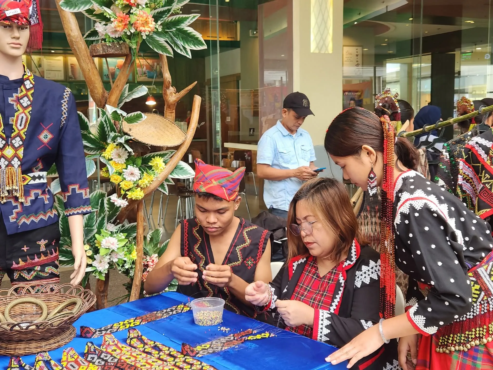

Kasfala (Our History)
Upper Labay High School is a public secondary institution under the Department of Education (DepEd) - Division of General Santos City. While we provide standard Junior High (Grades 7-10) and Senior High (Grades 11-12) programs, we are uniquely situated on Blaan ancestral land.
We are currently strengthening our identity by developing a Cultural Heritage Learning Center, where we integrate traditional Blaan-inspired beadwork and jewelry designs into our students' learning journey.

The DepEd Mandate
The Department of Education was established through the Education Decree of 1863 as the Superior Commission of Primary Instruction under a Chairman. The Education agency underwent many reorganization efforts in the 20th century in order to better define its purpose vis a vis the changing administrations and charters. The present day Department of Education was eventually mandated through Republic Act 9155, otherwise known as the Governance of Basic Education act of 2001 which establishes the mandate of this agency.
The Department of Education (DepEd) formulates, implements, and coordinates policies, plans, programs and projects in the areas of formal and non-formal basic education. It supervises all elementary and secondary education institutions, including alternative learning systems, both public and private; and provides for the establishment and maintenance of a complete, adequate, and integrated system of basic education relevant to the goals of national development.
The DepEd Core Values
Spiritual belief and respect for others' faiths.
Sensitivity to social and cultural differences.
Environmental care and resource responsibility.
National pride and responsible citizenship.
The DepEd Vision
We dream of Filipinos who passionately love their country and whose values and competencies enable them to realize their full potential and contribute meaningfully to building the nation.
As a learner-centered public institution, the Department of Education continuously improves itself to better serve its stakeholders.
The DepEd Mission
To protect and promote the right of every Filipino to quality, equitable, culture-based, and complete basic education where:
- Students learn in a child-friendly, gender-sensitive, safe, and motivating environment.
- Teachers facilitate learning and constantly nurture every learner.
- Administrators and staff as stewards of the institution, ensure an enabling and supportive environment for effective learning to happen.
- Family, community and other stakeholders are actively engaged and share responsibility for developing life-long learners.
Meet the Faculty
Get to know the school leaders, advisers, and mentors who guide our learners with professionalism, compassion, and pride in Blaan heritage.
Administrative Leadership
The stewards ensuring a supportive environment for effective learning.
Loading administration...
Junior High School Faculty
Dedicated educators for Grades 7 to 10.
Loading JHS faculty...
Senior High School Faculty
Subject specialists for Grades 11 and 12.
Loading SHS faculty...
Our Cultural Heritage Learning Center
We are currently building our collection of authentic Blaan beadwork patterns. As we transform Upper Labay High School into a hub for indigenous craftsmanship, click the button below.
Follow Our Journey